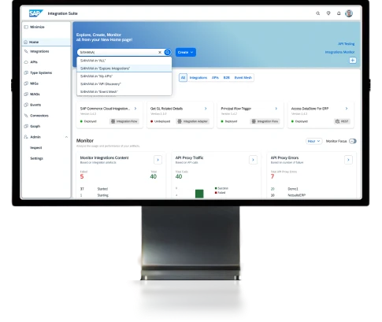
SAP
iSuite Renovation | Joule
Modernising critical Integration Suite workflows in Fiori, with conversational, task-focused experiences for Joule.
We partner with customer-obsessed companies to shape how humans and AI work together, designing intelligent products around human intent, judgement and trust to deliver meaningful outcomes.
AI is making products more intelligent. But is it making them more meaningful to the people using them?
We love partnering with companies that see AI as an opportunity to amplify human potential, not simply automate tasks. We design how humans and AI work together, keeping human intent, judgement and trust at the heart of intelligent experiences.
China · Germany · India · Japan · Singapore · UK · US
A network of 25 UX companies across the globe
Hosts in 2014, 2020 and 2025
Bengaluru · Pune

Modernising critical Integration Suite workflows in Fiori, with conversational, task-focused experiences for Joule.
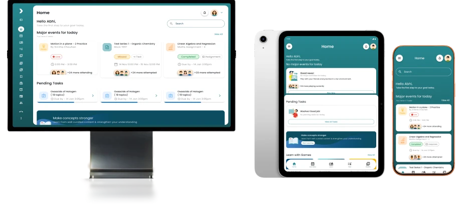
Personalised learning for students preparing for NEET and JEE.
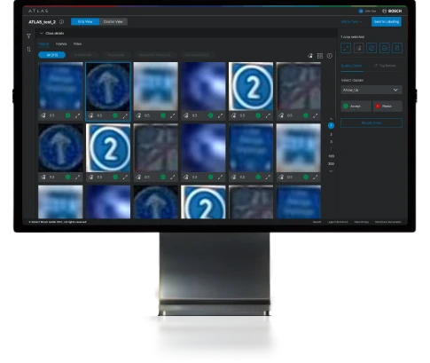
Helping developers organise, classify and tag images to build richer datasets.
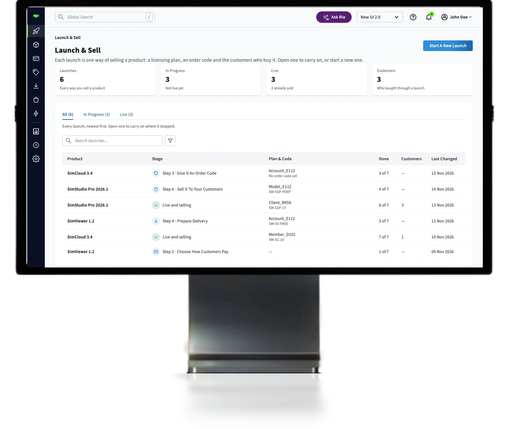
Simplifying how software is launched, licensed and sold, with AI assistance built into the workflow.
AI-enabled classroom experiences for TP Vision.
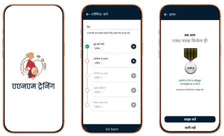
Gamified mobile training for medical midwives, designed around accessibility, context and real human needs.
AI creates possibilities. Humans create meaning.
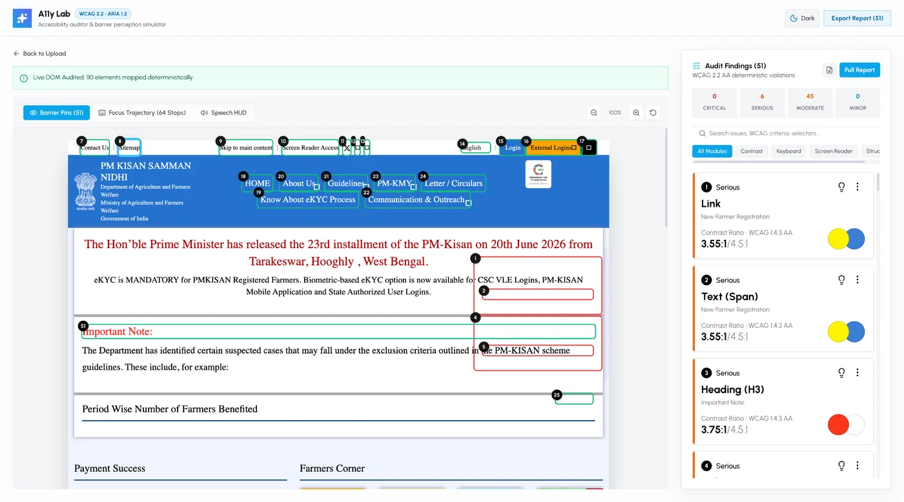
AI-assisted accessibility auditing.
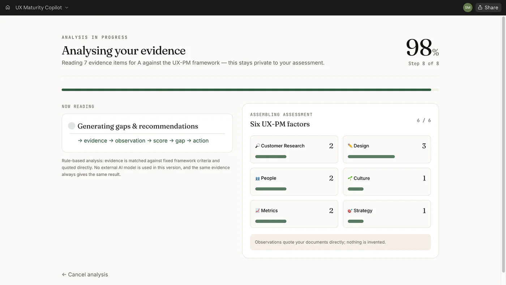
UX maturity assessment.
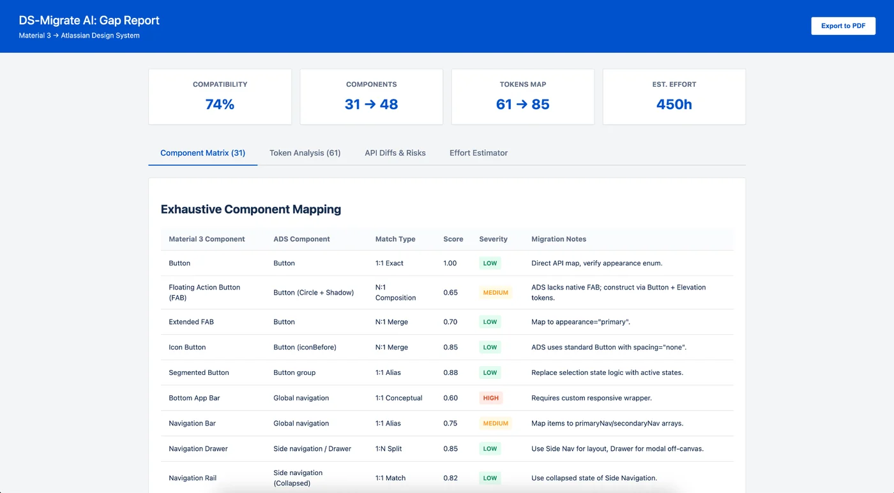
Design system gap analysis.
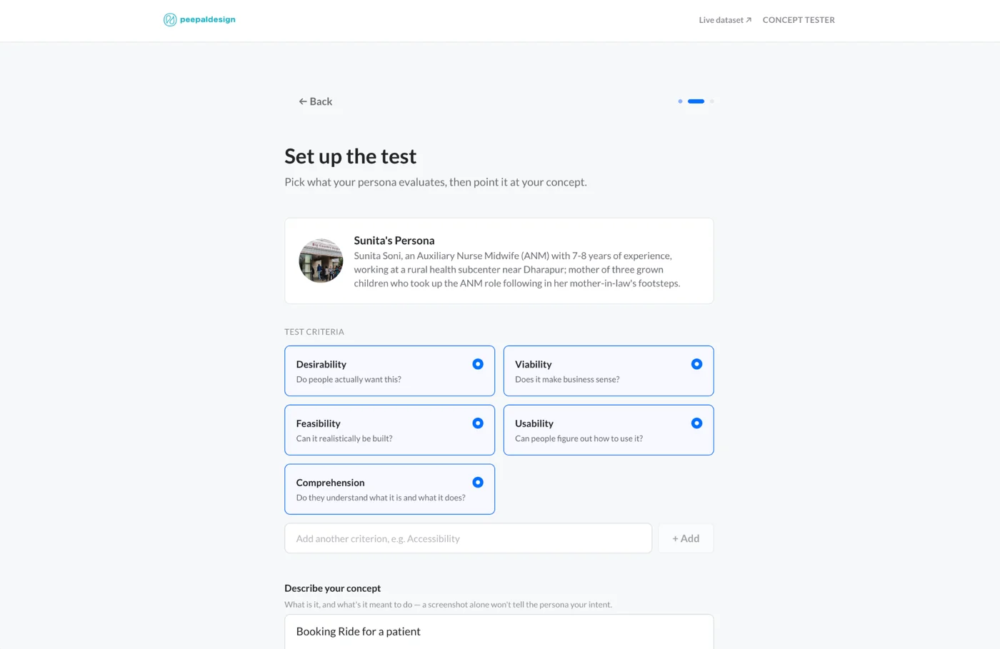
AI-driven concept testing.
A structured, human-led process where outputs are examined and decisions stay accountable.
AI enabled. Human led. Trust-built. Five principles we apply across the whole design lifecycle, from aligning on goals to scaling what works.
We are open about how we use AI and you are always in control.
AI works alongside our experts to uncover insights faster and deeper.
Human creativity at the center. AI expands what's possible and we design what matters.
Every output is tested, verified and refined. No hallucinations.
Every decision, source and rationale is documented and traceable.
Continuous design and research intervention from a blended AI-UX team: solution, visualization and interaction experts, researchers and more.
Discrete design and research interventions or design engagements on demand, with blended consulting support.
Design consultants working from the client premise, guided and supported by PeepalDesign experts on a time and material basis.
Design consultants working from the client premise, managed by the client team.
← All creative ways in between →
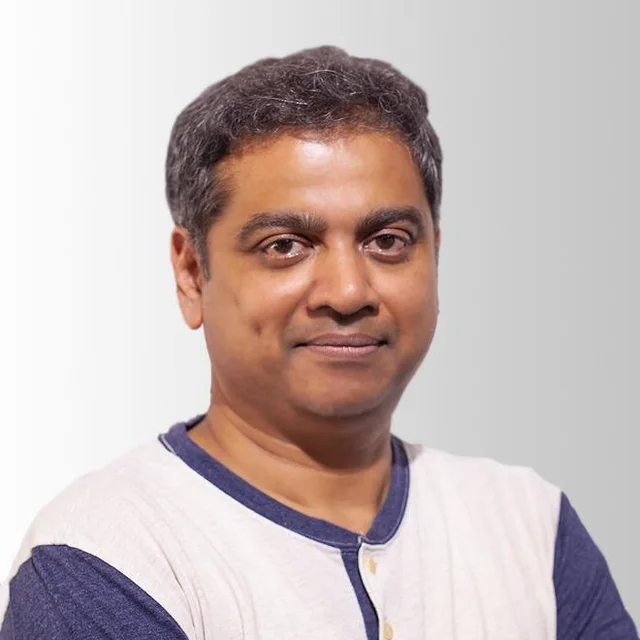
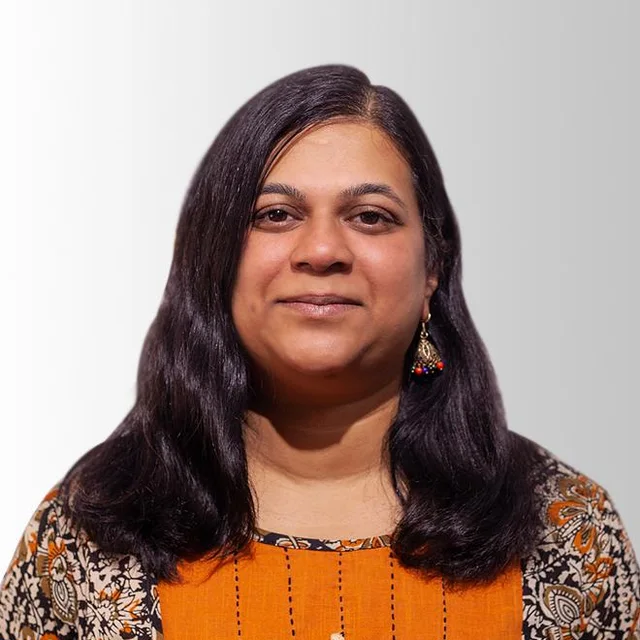
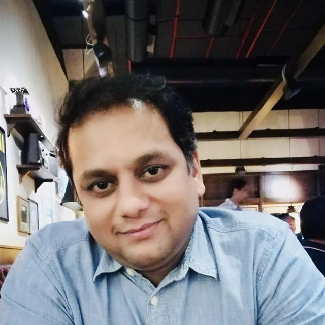
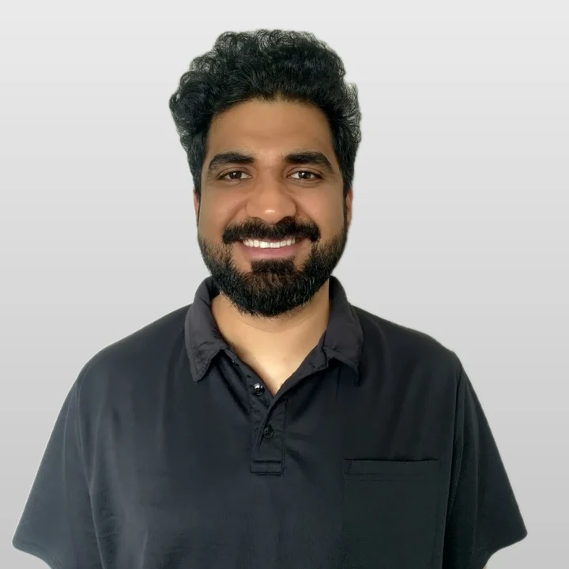
We turn AI ambition into trusted human-AI experiences that people adopt and businesses can scale.
We identify where AI can create real user and business value, not just where AI can be added.
We design copilots, agents, conversational interfaces, multimodal journeys and AI-powered workflows that fit naturally into how people work.
We design transparency, explainability, control, validation and accountability into AI experiences from the beginning.
We validate AI concepts, prototypes, user confidence, adoption risks and business relevance before clients scale engineering investment.
We combine 15 years of research and product design maturity with AI-enabled discovery, design, validation and governance frameworks.
From AI discovery sprints to dedicated AI design teams, we support clients at every stage of their AI product maturity.
We don't just design what AI can do. We design how it creates value for people.